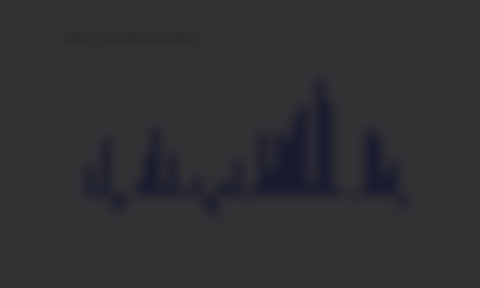
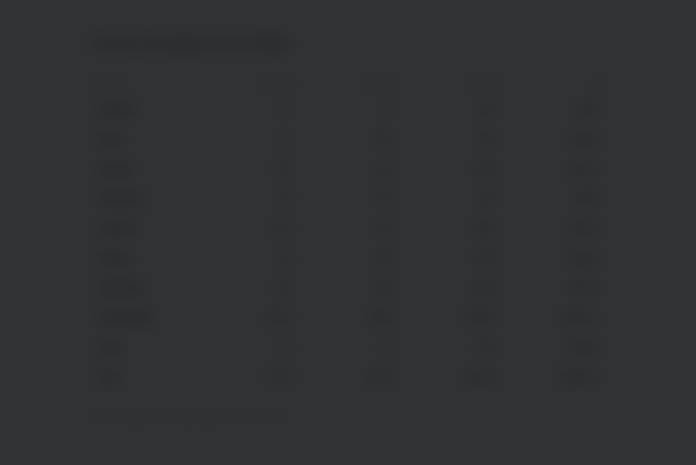

Digital Asset Investment Products See $415M Outflow as 19-Week Inflow Streak Ends
Bitcoin-linked products drove most of the reversal as institutional crypto flows turned negative for the first time after months of sustained buying.
- Digital asset investment products posted $415 million in weekly outflows.
- The reversal ended a 19-week inflow streak that had reached $29.4 billion.
- Bitcoin products accounted for $430 million of the withdrawals.
- The United States saw the biggest pullback, while Germany, Switzerland, and Canada still recorded inflows.
Digital asset investment products posted $415 million in net outflows in the latest reporting week, ending a 19-week run of inflows that had brought $29.4 billion into the sector, according to CoinShares. The shift marks the first notable break in institutional crypto demand since the US election-driven wave of allocations began.
In its weekly fund flows report published on February 17, 2025, CoinShares said the reversal came as investors responded to a more hawkish macro backdrop. The firm pointed to Federal Reserve Chair Jerome Powell's comments and stronger-than-expected US inflation data as the main factors behind the retreat.

Bitcoin products absorbed most of the selling
The bulk of the outflows came from Bitcoin investment products, which recorded $430 million in weekly withdrawals. That suggests the move was not a broad-based exit from every part of the digital asset market, but a more concentrated reduction in exposure to the sector's largest and most institutionally owned asset.
CoinShares also noted that short-Bitcoin products posted $9.6 million in outflows. That matters because it indicates investors were not aggressively rotating into bearish trades. Instead, many appear to have simply reduced exposure as macro conditions turned less supportive.
For market participants, that distinction is important. A rise in short positioning would usually point to growing conviction in further downside. A simultaneous reduction in both long and short products, by contrast, often signals uncertainty and lower appetite for directional bets.
US flows weakened while some regions stayed constructive
Regionally, the United States accounted for the largest share of the pullback, with $464 million in outflows. That outweighed inflows from several other markets and reinforced the idea that US macro policy remains the single biggest driver of institutional crypto positioning.
At the same time, not every region followed the same pattern. CoinShares said Germany brought in $21 million, while Switzerland and Canada added $12.5 million and $10.2 million, respectively. That regional divergence suggests some investors used the weakness as a selective entry point rather than a reason to exit the market entirely.

Altcoin products still attracted capital
While Bitcoin bore the brunt of the outflows, some altcoin-linked products continued to attract fresh money. Solana led inflows with $8.9 million, followed by XRP with $8.5 million and Sui with $6 million.
That split offers a more nuanced read of the week's data. Rather than abandoning digital asset exposure completely, some investors appear to have rotated into assets and narratives they see as having stronger near-term upside or idiosyncratic catalysts.
CoinShares also reported that blockchain equities saw $20.8 million in inflows, taking year-to-date inflows in that segment to $220 million. This may reflect continued interest in crypto-adjacent exposure through listed companies, even when direct token-linked products face selling pressure.
Why this flow reversal matters
Weekly fund flow data is one of the clearest institutional sentiment indicators in crypto because it shows whether capital is entering or leaving professionally managed products, rather than simply tracking spot-market volatility. A reversal of this size, after such a long inflow streak, suggests that conviction has weakened at least temporarily.
It also reinforces how sensitive crypto allocation remains to interest-rate expectations. When inflation data comes in hot and the policy outlook becomes more restrictive, digital assets often face pressure alongside other risk-sensitive sectors. In that context, the $415 million outflow is not just a standalone weekly number. It is a sign that macro conditions are again dictating the tone for institutional positioning.
Market outlook
The next few weekly reports will be more important than the headline figure alone. If inflows return quickly, the latest outflow may be remembered as a short-lived reaction to policy repricing. If redemptions continue, however, it could indicate that institutional demand is becoming less stable after an unusually strong multi-month run.
For now, the main takeaway is clear: the long inflow streak has been broken, Bitcoin products took the hardest hit, and investor behavior is becoming more selective rather than uniformly bullish across the digital asset sector.